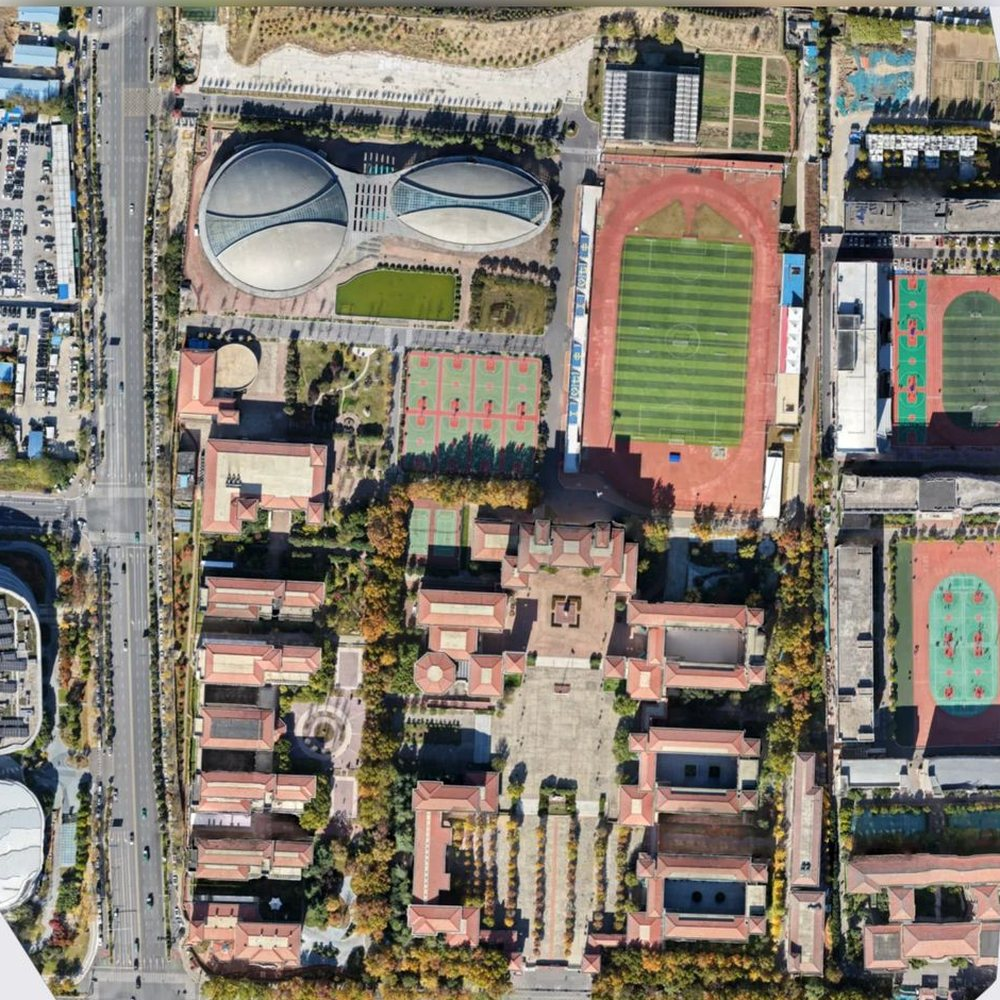
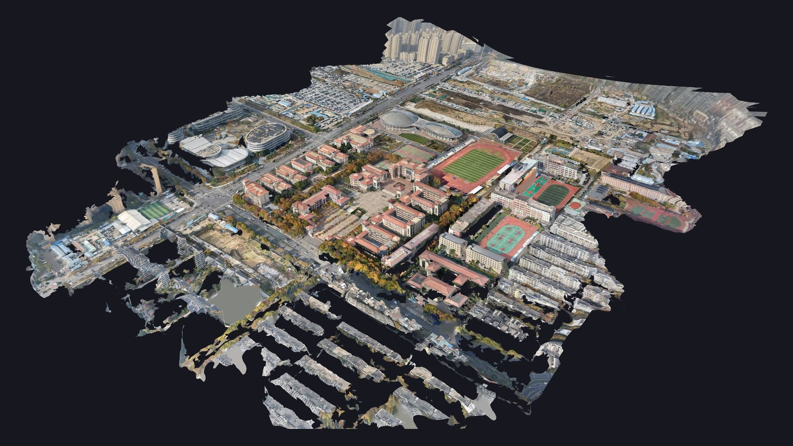
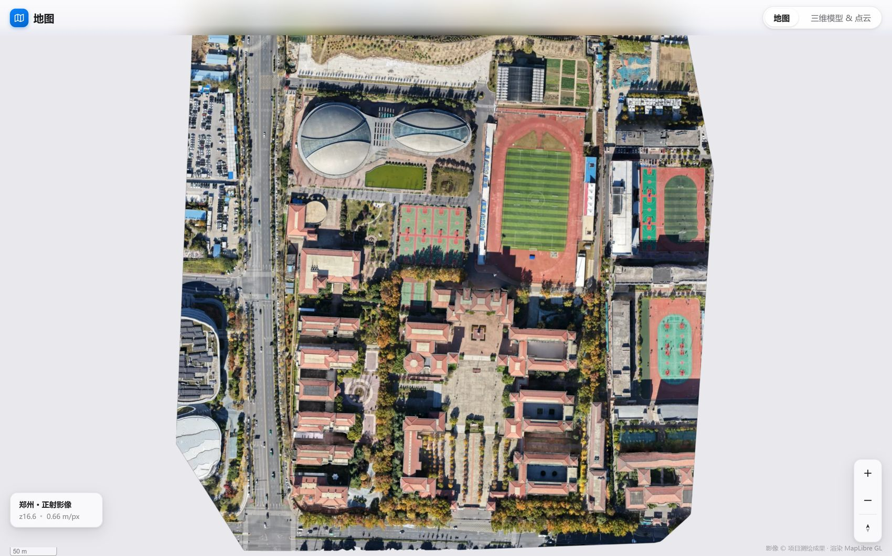
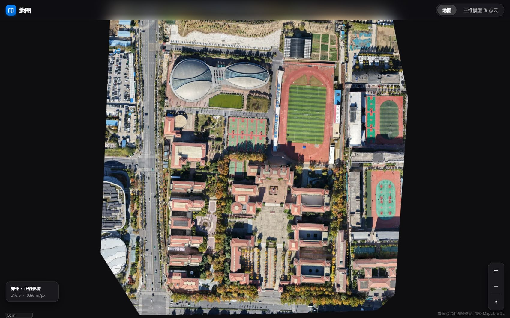

第一层
正射影像
垂直俯拍后做过正射纠正，每一像素对应地面 5 厘米。看平面关系、量距离，都以它为准。

329,051 个三角面 · 2,852,224 个点 · 实时渲染
从 5 厘米的影像，
到 34,316,746 个激光点。
同一片校园，被记录了三次：一次用相机，一次用倾斜摄影，一次用激光雷达。 三种数据在同一个 UTM 坐标系里对齐，误差不到一个像素。
三层数据
正射影像负责「看得清」，实景模型负责「走得进」，点云负责「量得准」。 三层叠在同一套坐标上，各管一段。

垂直俯拍后做过正射纠正，每一像素对应地面 5 厘米。看平面关系、量距离，都以它为准。

倾斜摄影生成的带纹理网格，楼顶、立面、树冠都有形。可以绕到背面，也可以贴地看。

激光雷达逐点测距，屋脊、树线、地面的真实高程都在里面。用来校验模型，也用来算高度。
地图
整幅正射影像按 15–21 级切成 2,374 张瓦片，WebP 压缩，按需加载。 默认视图自动贴合窗口大小，深色模式下边缘与界面同步。

三维
Draco 把 366 MB 的模型压到 19 MB；八叉树 LOD 让 285 万点的点云在 60 fps 下自由漫游。 模型、点云、线框与 10 米地面网格，可以任意组合。

视角对照
左边是三维模型的俯视角度，右边是地图页的深色界面。 两边的体育场、主楼、操场落在同样的相对位置。

俯视 · 三维模型

平面 · 深色模式
同一坐标
影像用 UTM 49N 的绝对坐标；模型与点云把原点搬到校园中心， 用相对坐标省掉百万级的数值位。换算只差一次平移。